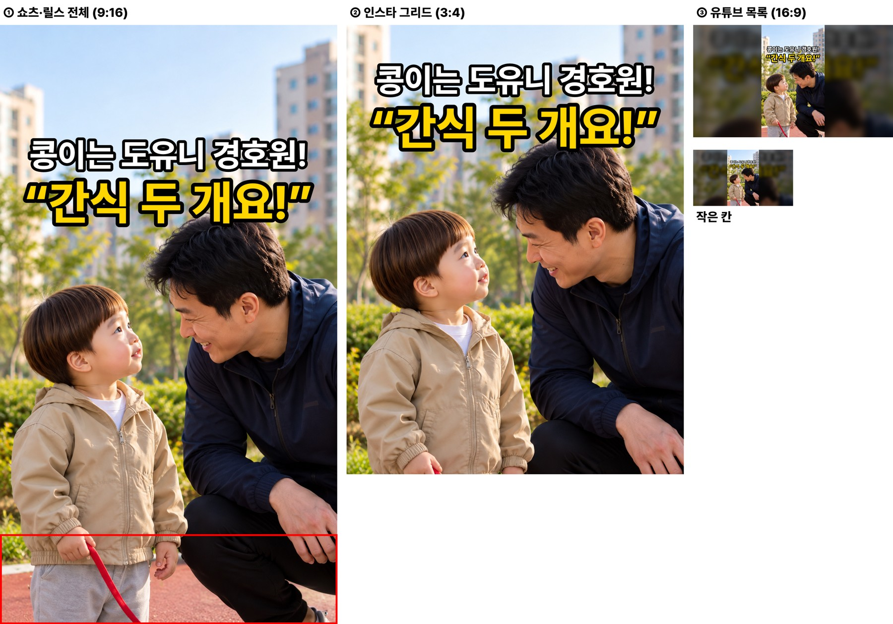
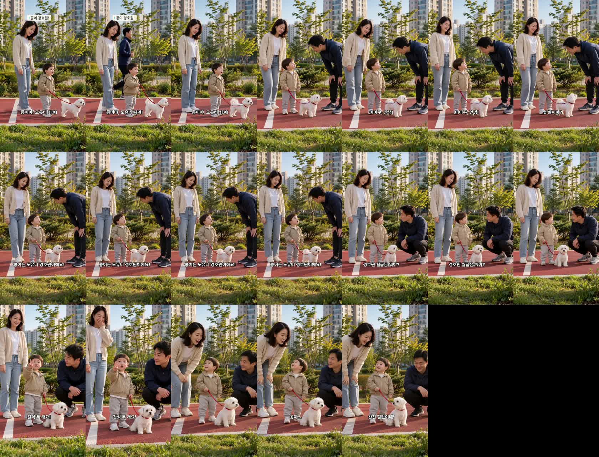
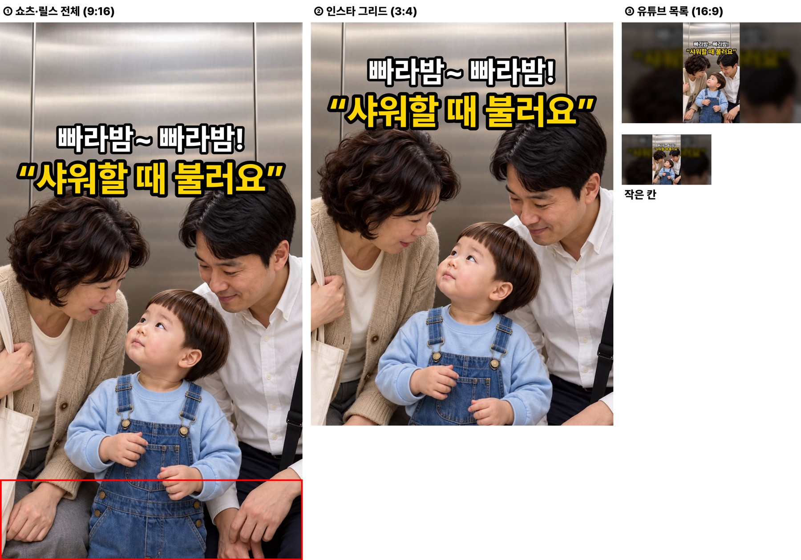
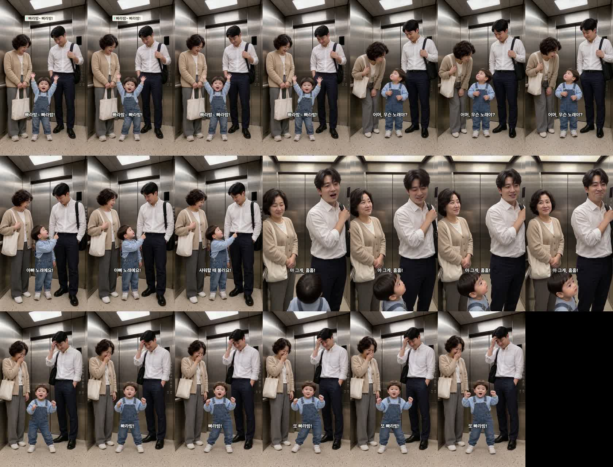

콩이 경호원 · 엘리베이터 노래 — 새 방식으로 다시 만든 완성본
꼬미·서연이 방식 연기 지시(대표님 «새 방식이 더 자연스럽네») · 두 편 모두 D8 까지 · 아직 업로드 대기열에 올리지 않았습니다(대표님 «업로드 대기로» 뒤에 등록)
1. 공원에서 콩이가 막아선 아저씨에게 두 살이 한 말 (19.4초 · 6컷)
봐 주셔야 할 것
- 연기 — 아저씨·엄마가 새 방식으로 바로 말하고, 듣는 사람이 반응합니다. 어색하지 않은지.
- 1컷 — 뒤로 남색 옷 아저씨가 뛰어 지나갑니다(다음 컷에 등장하는 그 아저씨). 자연스러운 예고로 보이는지.
- 6컷 — 엄마가 «완전 헐값이네!» 하며 웃음을 참다 허리를 숙입니다.
- 썸네일(아래) — 조깅 아저씨와 도윤이 투샷 · 흰 줄 «콩이는 도유니 경호원!» · 노란 줄 «간식 두 개요!». 콩이는 화면 밖이라 안 나옵니다.
다시 만든 이유: 1·5·6컷이 넓은 화면에서 H3 가 스스로 당겨 찍어 튐 → 5·6컷 가깝게 다시 · 1컷은 «걸으며 말하기»를 «멈춰 서서 외치기»로.
| 컷 | 누가 | 대사 | 받아쓰기 | 음높이 |
|---|---|---|---|---|
| 1 | 도윤이 | 콩이야, 도유니 지켜! | 콩이야! 도윤이 지켜! | 500Hz |
| 2 | 조깅 아저씨 | 어이구, 안녕! 몇 살이야? | 어이구 안녕 몇살이야? | 196Hz |
| 3 | 도윤이 | 콩이는 도유니 경호원이에요! | 콩이는 도윤이 경호원이에요. | 381Hz |
| 4 | 조깅 아저씨 | 경호원 월급은 뭐야? | 경호원 월급은 뭐야? | 211Hz |
| 5 | 도윤이 | 간식 두 개요! | 간식 2개요 | 444Hz |
| 6 | 엄마 | 콩아… 완전 헐값이네! | 콩아 완전 헐값이네 | 286Hz |
썸네일

1초 간격 프레임

2. 출근길 엘리베이터에서 두 살이 부른 노래의 주인 (20.5초 · 5컷)
봐 주셔야 할 것
- 장소 — 새 기준 사진 A(좁은 승객용 칸 안, 뒤에 닫힌 문)로 다시 그렸습니다. 안/밖 섞임·화물칸 느낌이 사라졌는지.
- 끝 컷 — 도윤이가 «빠라밤! 또 빠라밤!»을 «또 빠라밤!» 한 번 더 불렀습니다. 그 사이 아주머니는 입을 가리고 아빠는 이마를 짚습니다.
- 1컷 — 노래로 부르는 대사라 도윤 음높이 320Hz(경고선 330 바로 아래). 아기 목소리로 들리는지.
- 썸네일(아래) — 이웃 아주머니·아빠·도윤이 셋 · 흰 줄 «빠라밤~ 빠라밤!» · 노란 줄 «샤워할 때 불러요».
| 컷 | 누가 | 대사 | 받아쓰기 | 음높이 |
|---|---|---|---|---|
| 1 | 도윤이 | 빠라밤~ 빠라밤! | 바라밤 바라밤 | 320Hz |
| 2 | 이웃 아주머니 | 어머, 무슨 노래야? | 어머 무슨 노래야? | 198Hz |
| 3 | 도윤이 | 아빠 노래예요! 샤워할 때 불러요! | 아빠 노래예요. 샤워할 때 불러요. | 340Hz |
| 4 | 아빠 | 아 그게, 흠흠! | 아... 그게... | 140Hz |
| 5 | 도윤이 | 빠라밤! 또 빠라밤! | 빠라밤~ 또 빠라밤~ 또 빠라밤~ | 333Hz |
썸네일

1초 간격 프레임

기계 검사
- 두 편 D0~D8 · 시작 그림 이탈 · 컷 안 장면 튐 검사 통과 · 컷마다 한 사람만 말함 · 받아쓰기 대본과 같은 뜻
- 자리·옷·소품(콩이 빨간 목줄 · 숄더백·에코백)이 처음부터 끝까지 같음